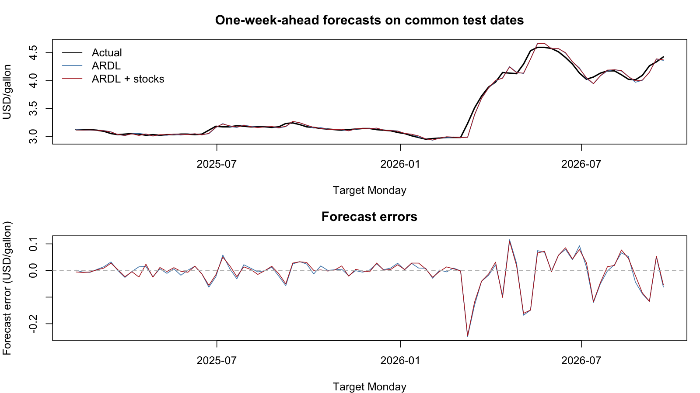
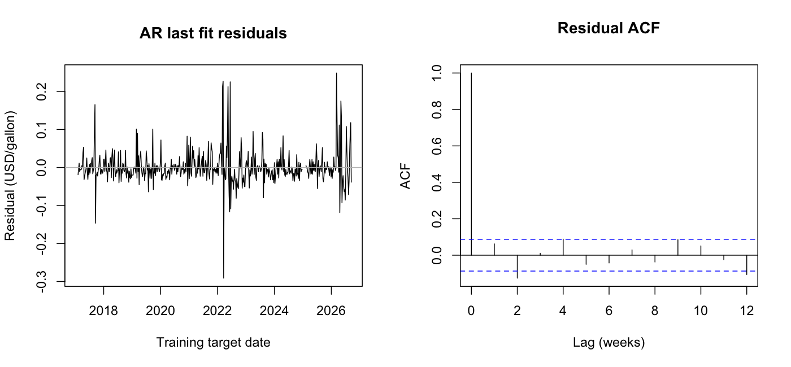
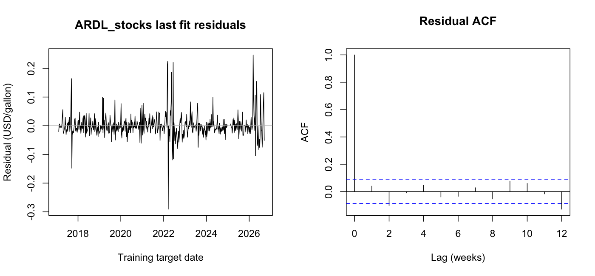

Predict the change between consecutive Monday regional retail prices, then add it to the current price. No futures, seasonality or neural network is used in this first comparison.
Assume the current local Monday observation is available at the forecast origin. Spot inputs end at least 10 days earlier; equity returns end the preceding Friday. Exact historical release timestamps and revisions are not verified. The stock snapshot contains retrospectively adjusted prices. Therefore this is an exploratory chronological backtest, not certified real-time performance.
2024 validation targets: 52; test targets from 2025 onward: 85. Test range: 2025-02-10 to 2026-09-21. All models use identical complete target rows. Missing rows are not imputed; excluded origins are saved. Recent five years means a trailing 260-week training window.
AR orders: 1, 2, 4. ARDL uses WTI or Brent plus RBOB, each with 1 or 2 available weekly changes. Search over growing and five-year windows. Select by 2024 MAE, then RMSE. Stock comparison fixes the selected ARDL settings and tries five single stocks, two groups, or all five, with 1 or 2 available weekly returns. Settings are then frozen; coefficients are refitted at each test origin using only previously observed targets.
Earlier EDA viewed the full period, so this test is not completely untouched. Validation involves multiple candidate choices. These results are preliminary and need subsequent fresh-data evaluation. Observation dates are not publication dates. No forecast of the current calendar week is produced from these old snapshots.
| model | id | features | window |
|---|---|---|---|
| AR | AR_expanding_1 | local0 | expanding |
| ARDL | ARDL_expanding_1_2_brent | local0 + brent0 + brent1 + rbob0 + rbob1 | expanding |
| ARDL_stocks | stocks_VLO_1 | local0 + brent0 + brent1 + rbob0 + rbob1 + VLO0 | expanding |
local0 is the origin-week local change; local1 is one week earlier. wti0/brent0/rbob0 is the change ending on origin minus 10 days. Stock0 is the return ending the preceding Friday; stock1 is one week earlier.
| model | MAE | RMSE | n |
|---|---|---|---|
| naive | 0.02712 | 0.03422 | 52 |
| AR | 0.01787 | 0.02350 | 52 |
| ARDL | 0.01773 | 0.02368 | 52 |
| ARDL_stocks | 0.01572 | 0.02264 | 52 |
MAE, RMSE and bias are in dollars per gallon. Positive bias means overprediction. Negative percentage improvement means worse than the naive baseline.
| model | MAE | RMSE | bias | n | MAE_improvement_vs_naive_pct |
|---|---|---|---|---|---|
| naive | 0.04471 | 0.07664 | -0.01529 | 85 | 0.00000 |
| AR | 0.03342 | 0.05465 | -0.00557 | 85 | 25.24061 |
| ARDL | 0.03463 | 0.05555 | -0.00571 | 85 | 22.54307 |
| ARDL_stocks | 0.03391 | 0.05411 | -0.00426 | 85 | 24.14049 |
| year | model | n | MAE | RMSE |
|---|---|---|---|---|
| 2025 | naive | 47 | 0.01511 | 0.02227 |
| 2025 | AR | 47 | 0.01505 | 0.02049 |
| 2025 | ARDL | 47 | 0.01570 | 0.02153 |
| 2025 | ARDL_stocks | 47 | 0.01491 | 0.02007 |
| 2026 | naive | 38 | 0.08132 | 0.11191 |
| 2026 | AR | 38 | 0.05615 | 0.07850 |
| 2026 | ARDL | 38 | 0.05803 | 0.07956 |
| 2026 | ARDL_stocks | 38 | 0.05742 | 0.07778 |
Adding the validation-selected VLO return reduces ARDL test MAE by about 2.06% and RMSE by about 2.61%. However, the local-only AR model has lower test MAE than either ARDL variant. Thus these data do not yet establish that stocks should be retained. The small equity improvement has not been tested for statistical significance, and performance varies substantially by year. Do not choose new stock features by inspecting this test.

These are the last historical training fits. Residual dependence or changing variance can remain; model assumptions should not be inferred from accuracy alone. Gaps remain on the calendar in ACF plots. Do not interpret differences in selected models as causal effects.

